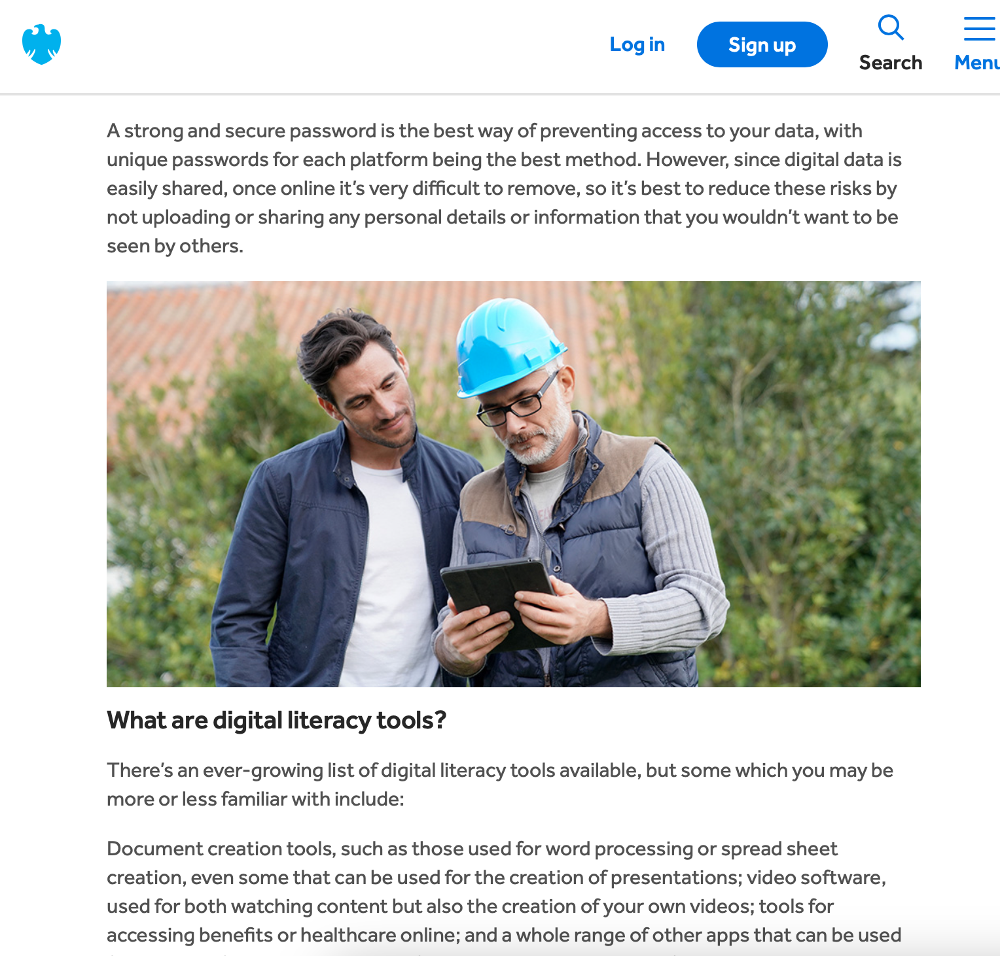
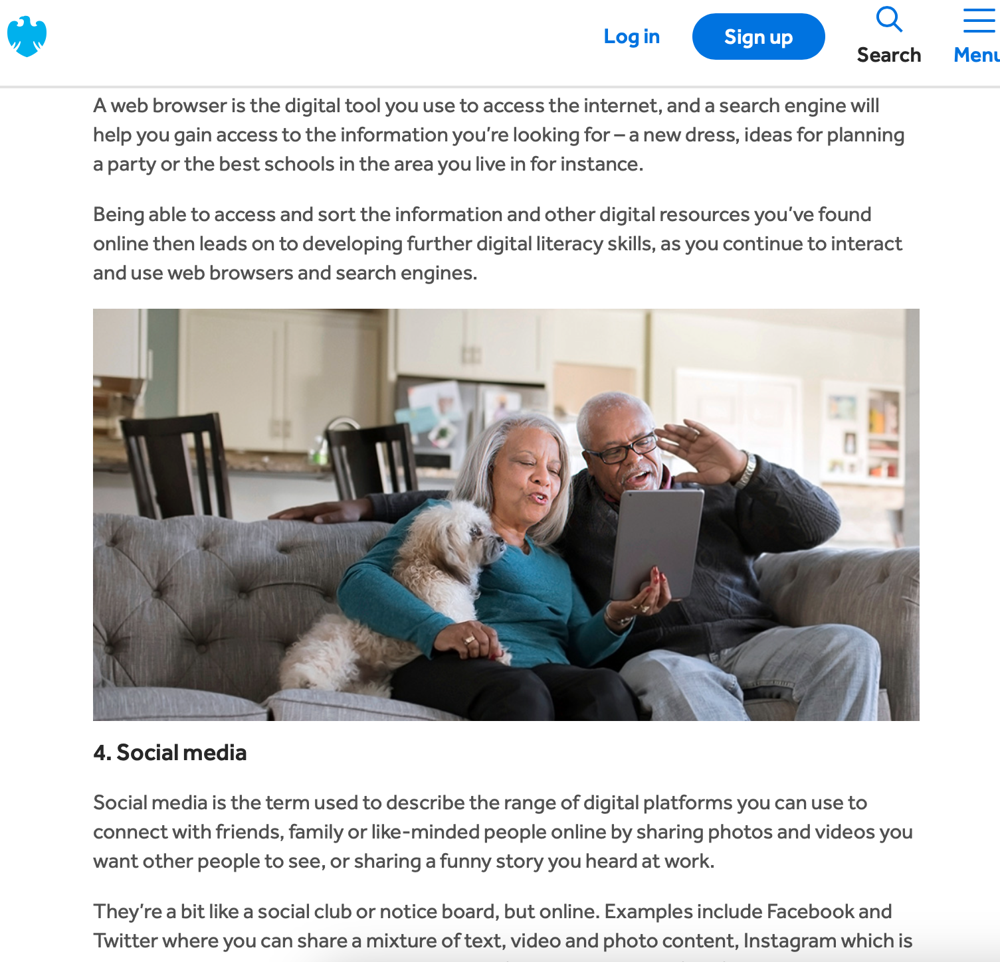

MADa Week 7 Tasks
IL: Task 1
Since starting this term, I have engaged in the creative process throughout the creation of my portfolio website. I have experienced the first stage of preparation through brainstorming in the first week of what I want to create my portfolio around. What outcome do I want to have after this term? Especially with myself taking MAD(B) I wanted to make sure my original idea was one I could stick with for the duration of the two courses. I then moved to the process of incubation. During the stage I was researching different branches of digital media and once I found an idea one I wanted to work, digital literacy. It was then that I brainstormed to find a way could make It more tailored to myself, how could I make my project one I would find interesting. It was then that I just started listing all my interest I have. Now on the ideation stage. With club penguin standing out so much to me, I tied it together as a method of digital literacy at a young age and then began. I then began the evaluation stage of the process as I began to consider the probability of falling through with my idea. I considered various scenarios, and all came up positive and in line with my idea. After my project proposal it was cemented that my idea was strong enough for the semesters work. I now find myself in the implementation stage as I carry out these lab tasks and independent learning as I develop my idea that I prepared for within the previous stages.
IL: Task 2
Selected website: Barclays Digital Wings https://digital.wings.uk.barclays/blog/what-are-digital-literacy-skills/
 Use of images on the sites are ineffective as they are basic images of people staring at devices. They add no sense of visual aid but just work for the sake of having images on the page so there isn’t just a page of plain text. The images also though have people holidng a piece of technology don’t correctly align with the purpose of the website.

They do however include an interesting video with better visual representation of what the website is trying to communicate. Perhaps just screenshots from this view as images on the site would have proven much more appropriate that the lazier images.
IL: Task 3
Vector graphic

Graphic 2
Graphic 3
Graphic 4
Graphic 5
Graphic 6